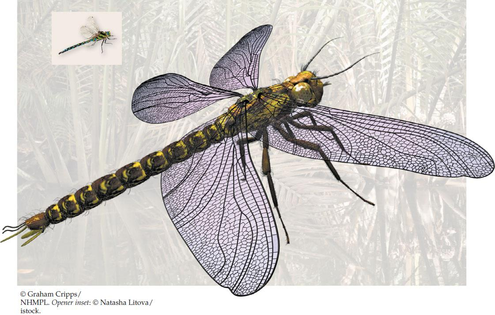

| 18 | The History of Life on Earth |
|

Meganeuropsis permiana, shown in a reconstruction from fossils. Except for its size, this giant from the Permian period was similar to modern dragonflies (shown in the inset at the same scale).
|
Almost anyone who has spent time around freshwater ponds is familiar with dragonflies. Their bright colors and transparent wings stimulate our visual senses on bright summer afternoons as they fly about devouring mosquitoes, mating, and laying their eggs. The largest dragonflies alive today have wingspans that can be covered by a human hand. Three hundred million years ago, however, dragonflies such as Meganeuropsis permiana had wingspans of more than 70 centimeters—well over 2 feet, matching or exceeding the wingspans of many modern birds of prey. These dragonflies were the largest flying predators of their time.
No flying insects alive today are anywhere near this size. But during the Carboniferous and Permian geological periods, 350–250 million years ago, many groups of flying insects contained gigantic members. Meganeuropsis probably ate huge mayflies and other giant flying insects that shared their home in the Permian swamps. These enormous insects were themselves eaten by giant amphibians.
None of these insects or amphibians would be able to survive on Earth today. The oxygen concentrations in Earth’s atmosphere were about 50 percent higher at that time compared to the present, and those high oxygen concentrations are thought to have been necessary to support giant insects and their huge amphibian predators.
Paleontologists have uncovered fossils of Meganeuropsis permiana in the rocks of Kansas. How do we know the age of these fossils, and how can we know how much oxygen that long-vanished atmosphere contained? The layering of the rocks allows us to tell their ages relative to one another, but it does not by itself indicate a given layer’s absolute age.
One of the remarkable achievements of twentieth-century scientists was the development of sophisticated techniques that use the decay rates of various radioisotopes, the ratios of certain molecules in rocks and fossils, and changes in Earth’s magnetic field to infer conditions and events in the remote past and to date them accurately. It is those methods that allow us to age the fossils of Meganeuropsis and to calculate the concentration of oxygen in Earth’s atmosphere at the time.
Earth is about 4.5 billion years old, and life has existed on it for about 3.8 billion of those years. That means human civilizations have occupied Earth for less than 0.0003 percent of the history of life. Discovering what happened before humans were around is an ongoing and exciting area of science.
Can modern experiments test hypotheses about the evolutionary impact of ancient environmental changes?